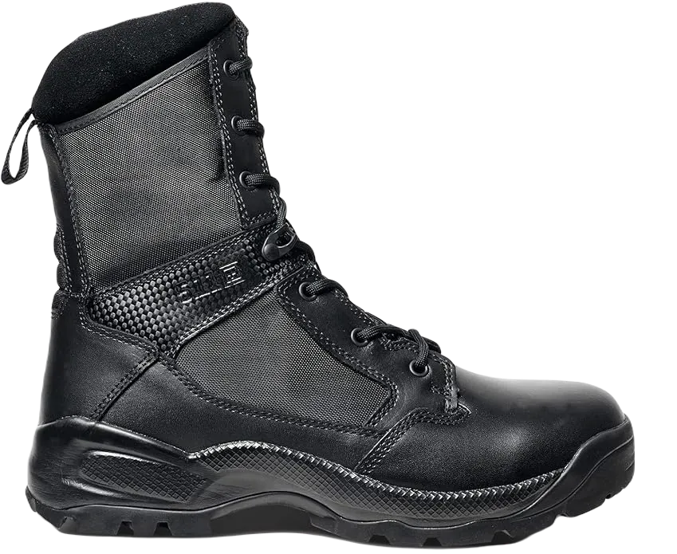
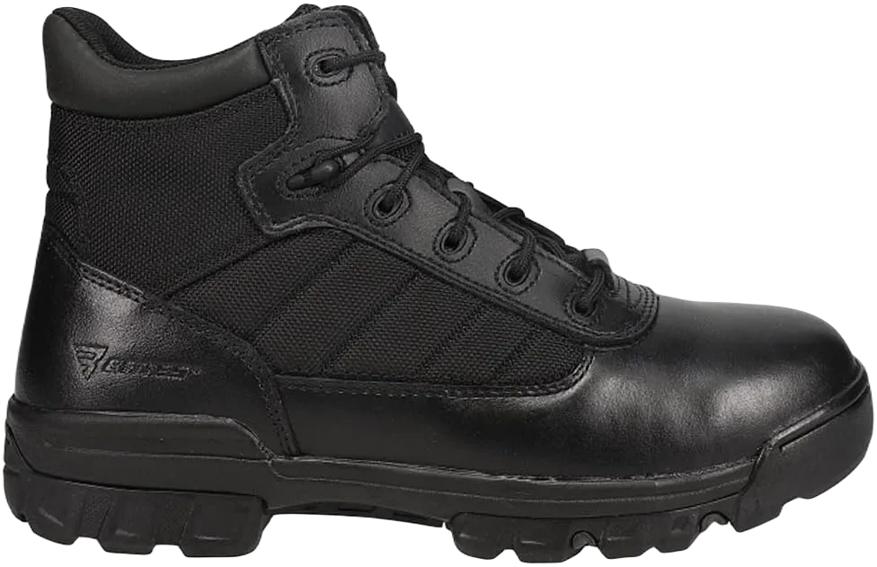

9 Best Police Boots for Summer 2024
When selecting shoes for police officers, it’s essential to focus on specific features that cater to their demanding roles. Police work requires a high level of endurance, with officers often needing to stand or move for long periods. Therefore, the shoes they wear must offer superior comfort and support. Shoes that are tailored to police officers should ensure maximum comfort, flexibility, and durability to enhance their performance during long shifts.
These shoes should be designed to provide a great experience, accommodating the challenges of their job and helping them to stay on their feet without discomfort.Police officers need footwear that can handle a variety of conditions, from standing for extended hours to walking in challenging environments. The best shoes should offer breathability, water resistance, and versatility to be worn in both winter and summer. They should provide excellent traction and solve common issues such as water retention, making them suitable for different weather conditions while ensuring officers remain comfortable and supported throughout the day.
-
#1
Danner men’s tachyon 8 duty boots
.webp)
These shoes are designed to adapt to different environments, offering protection and support. They are even bulletproof, providing safety from potential dangers while being lightweight and flexible. This ensures police officers have the necessary protection without compromising on mobility, making them ideal for daily duties in law enforcement.
Not only suitable for fieldwork, but these shoes also perform well during training. Their lightweight nature ensures flexibility and ease of movement without feeling bulky, offering maximum protection without adding extra weight.
In summary, these shoes provide comfort, breathability, and waterproof features, ensuring police officers are protected and comfortable in all conditions. Their design combines function with a sleek appearance, giving officers the confidence they need to perform effectively. -
#2
Bates men’s ultra lites
.webp)
These shoes offer extra protection, designed to perfectly fit your feet while matching the professional look of your uniform. They are equipped with all the essential features you need, from durability to comfort. With a modern design, these shoes are flexible and offer the right balance of support, making them an ideal choice for those seeking performance and style in their footwear.
Carefully crafted to meet high standards, these shoes are built to fulfill all necessary requirements. Their side zippers provide a solution to grip issues, ensuring a snug and secure fit. Whether working in urban or rural areas, these shoes are designed to deliver comfort and stability, allowing you to perform well in any situation.
Featuring a soft touch and a precision-crafted design, these shoes come with a high-quality midsole and outsole that promote stress-free movement. The advanced support system ensures your feet are well-cushioned, providing exceptional comfort and support for long hours on your feet. -
#3
Under Armour men’s stellar tactical boots
.webp)
These shoes provide top-notch features, ensuring high-quality performance and comfort. With their durable construction and flexible outsole, they help reduce stress on your feet and back, making them ideal for long hours of wear. The wide range of colors and designs, along with a smoother sole, adds style without compromising on functionality. These shoes are lightweight and highly flexible, providing both comfort and mobility.
In addition to flexibility, these shoes offer excellent waterproof resistance, protecting your feet from harsh conditions. They ensure your feet stay dry and comfortable, even in challenging environments, making them perfect for those who need reliable protection.
The shoes are designed for safety, featuring a shock-absorbing outsole for added comfort and protection. The rubber sole is water-resistant and also provides resistance to oil, ensuring that you stay safe in various working conditions. With these features, you can count on the shoes for superior support and durability. -
#4
Smith and Wesson breach 2.0
Wearing the right shoes on duty provides essential support and enhances your overall experience. The shoes in question are made with high-quality materials, offering durability and value, making them a smart choice for those looking to save money without sacrificing quality. They are designed to give you the best experience and features, ensuring that you perform your duties comfortably and efficiently.
These shoes are especially suited for police officers, offering the necessary flexibility and durability to handle the demands of the job. With their robust construction, they are built to endure heavy loads, such as water, gear, and equipment, while still providing comfort. These shoes truly stand out as a reliable option for law enforcement professionals who need footwear that can handle the physical demands of their work.
If you’re in law enforcement or undergoing training, these shoes provide the comfort and flexibility required for long shifts. The well-crafted midsole ensures maximum comfort, while the lightweight design and waterproof quality make them ideal for all-day wear. These shoes protect your feet from harmful elements, ensuring you remain comfortable and focused throughout the day, no matter the conditions. -
#5
5.11 atac 8 inches men’s boot
These shoes are a fantastic addition, designed to deliver top-notch results with durability and flexibility. The flexible sole ensures that your feet and ankles remain stress-free, reducing the risk of injuries while providing moisture control for added comfort. These shoes are ideal for keeping your feet protected and comfortable throughout the day.
If you choose these shoes, you’ll enjoy a great experience at a reasonable price. They are highly sought after, especially for those in police training, due to their excellent performance and affordability. Police boots need to be reliable, and these shoes offer just that – a perfect balance of comfort and durability for law enforcement professionals.
Ranked highly for their slip-resistant and water-resistant features, these shoes provide excellent grip on various surfaces. With a strong support system, they ensure you remain comfortable and secure during long hours on duty. These shoes are designed to meet the demands of police officers, offering all the features needed for their challenging work environments. -
#6
Rocky duty water proof modern
.webp)
These shoes are designed with a modern look, combining durability and flexibility to create an ideal pair of footwear. Understanding the importance of shoes for police officers, these shoes come with affordable toe protection and offer great functionality. They are built to provide essential features and benefits that are valuable for anyone in law enforcement, ensuring both protection and comfort.
While there are many stylish shoes available, these stand out for their practicality and alignment with the needs of police officers. Those familiar with law enforcement know how crucial it is to have footwear that meets their professional demands, and these shoes fulfill that requirement perfectly, providing everything officers could want in terms of performance and durability.
These shoes meet the specific standards preferred by law enforcement, making them the ideal choice for officers. With features like easy cleaning and a shock-absorbing sole, they ensure a high level of comfort and support throughout the workday. They are so reliable and well-designed that they quickly become a favorite for anyone seeking the best in work shoes. -
#7
Bates men’s Enforcer 5 inch nylon leather
When it comes to footwear for police officers, it’s essential to choose shoes that enhance their performance and comfort. Military personnel and cops often face demanding and heavy-duty tasks, so it’s crucial to select shoes that offer full protection and support for their feet. These shoes are designed to withstand tough conditions without compromising safety.
Built for hard work, these shoes help keep your feet safe from harmful elements while ensuring comfort. They meet the rigorous requirements for protection, featuring a shock-absorbing sole that enhances durability and stability. With their lightweight design and high-quality leather, these shoes are well-suited for law enforcement professionals, allowing for easy movement and flexibility throughout the day.
Additionally, if you choose to personalize these shoes, you can take advantage of great discounts we offer, making it easier to invest in quality footwear without damaging your feet or causing unnecessary stress. Overall, these shoes provide the perfect blend of functionality, protection, and comfort for those in the line of duty. -
#8
Adidas performance men’s GSg 9.2
.webp)
We are excited to introduce shoes specifically designed for you, offering exceptional flexibility and durability to ensure the best protection for your feet. Our street detective shoes provide the perfect combination of comfort and support, allowing for maximum performance without compromising on quality. We understand that police officers need footwear that balances durability and flexibility, ensuring they can move freely while staying comfortable on the job.
To achieve optimal results for your feet, these shoes are meticulously designed to meet law enforcement standards, ensuring you won't encounter any issues that could hinder your performance. Their construction emphasizes durability while providing the flexibility needed for a proper fit, making them an excellent choice for everyday wear.
These shoes are tailored to fulfill the specific requirements of law enforcement, delivering both comfort and reliable support. With these features, you can trust that they will perform well under demanding conditions, allowing you to focus on your duties without worrying about your footwear. -
#9
Belleville TR960Z tactical research khyber
Shoes play a crucial role in helping police officers perform their duties effectively without encountering any issues. These shoes are specifically designed to meet law enforcement standards, allowing every police officer to wear them comfortably. Understanding the demanding nature of their job, which often requires long hours of standing, we offer these shoes to provide optimal comfort and essential features for daily use.
These shoes boast impressive qualities, including durability, water resistance, and breathability, effectively addressing various challenges. The leather construction not only facilitates easy cleaning but also provides oil resistance, ensuring that officers feel comfortable and confident throughout their shifts. With a lightweight design, these shoes are an excellent solution for anyone looking to maximize comfort and performance on the job.
By choosing these shoes, officers can enjoy the benefits of reliable footwear that enhances their daily performance while keeping their feet protected and comfortable.